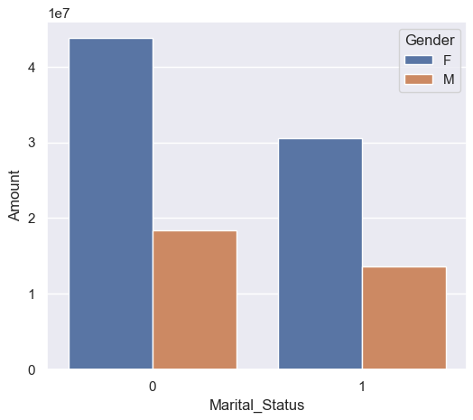
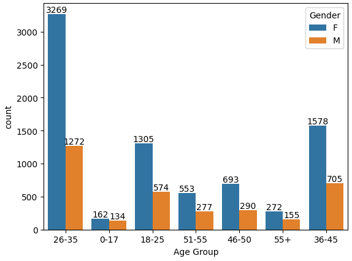
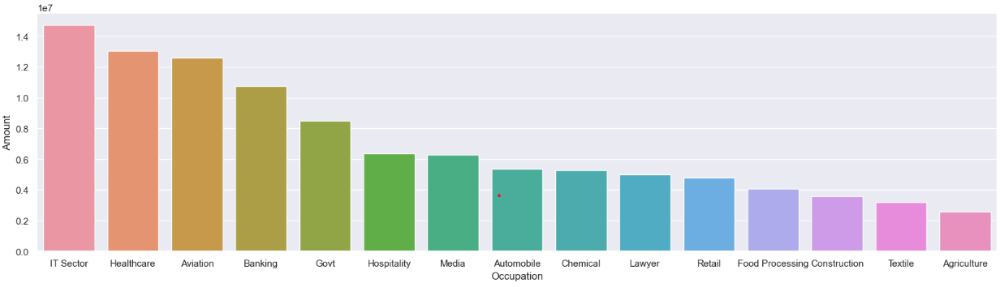
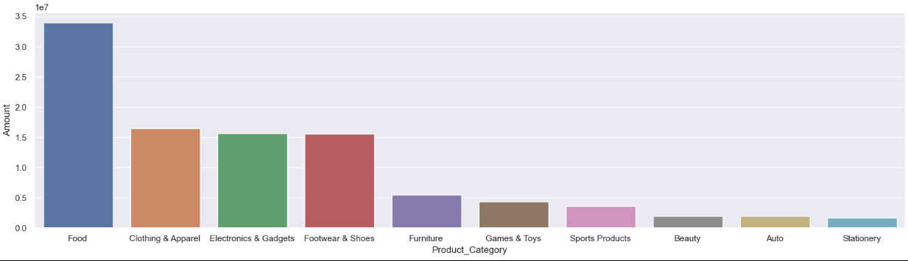
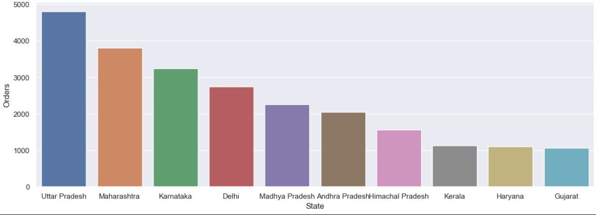

Summary
The Diwali Sales Analysis Web Project successfully provides a robust platform for businesses to analyze and visualize their sales data during the Diwali season. By offering secure data upload, comprehensive data cleaning, advanced analysis techniques, and dynamic visualization, the project empowers users with actionable insights for informed decision-making.
Conclusion Graphs
- 

- 
- 
- 
- 
Summary Statistics
- User_ID
Mean: 1003004.99
Median: 1003065
Mode: 1001680 - Age Group
Mean: 30.72
Median: 26
Mode: 26 - Age
Mean: 35.42
Median: 33
Mode: 30
- Marital_Status
Mean: 0.42
Median: 0
Mode: 0 - Orders
Mean: 2.49
Median: 2
Mode: 2 - Amount
Mean: 9454.08
Median: 8109
Mode: 7907
Conclusion
Married women aged between 26 and 35 years, residing in Uttar Pradesh, Karnataka, and Maharashtra, and working in the IT, Health, and Aviation sectors, are more likely to purchase products in the categories of food, clothing, and electronic gadgets.